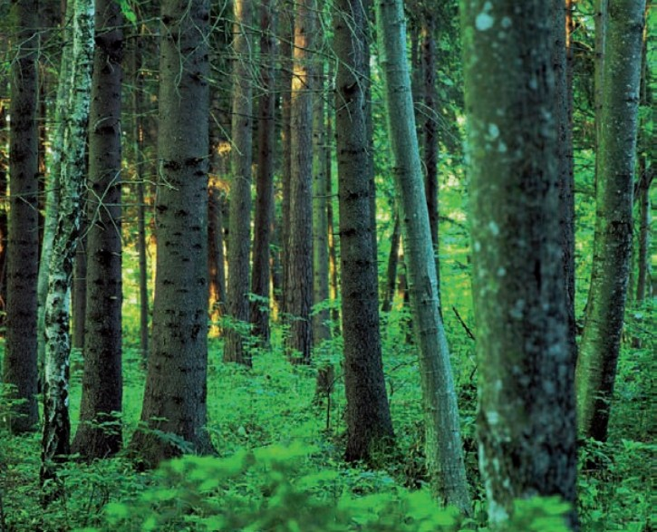

Damaksnis aug ar barības vielām bagātākās velēnu podzolaugsnēs. Galveno koku stāvu veido varenas priedes, egles, bērzi un apses. Koki var sasniegt pat 40–42 metru augstumu. Pamežs ir vidēji biezs, tajā aug pīlādži, lazdas un krūmi. Zemsedzi veido mellenāji, papardes, zaķskābenes, zemenes, vizbulītes, kreimenes un sūnas.

Avots: www.silava.lv